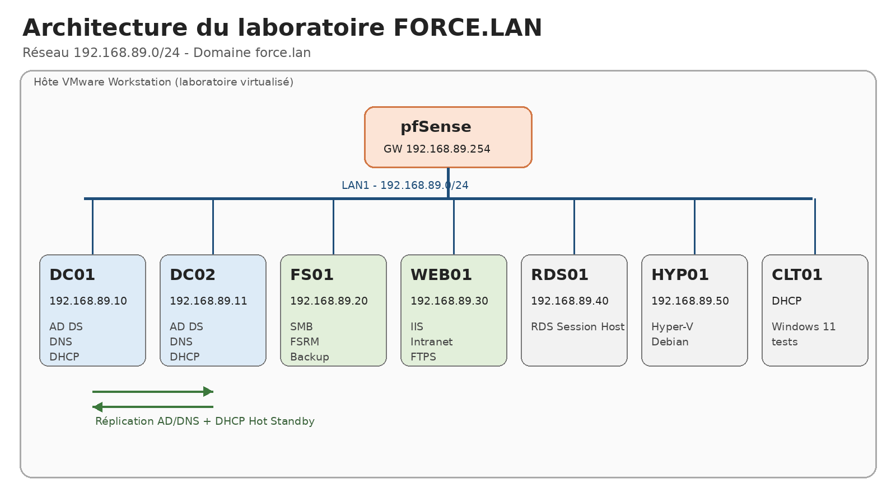

Systèmes & infrastructure01
Projet terminé
Administration Windows Server & services d’infrastructure
Laboratoire FORCE.LAN complet : Active Directory, DNS, DHCP, GPO, AGDLP, services de fichiers, PowerShell, sauvegarde, IIS, RDS, Hyper-V, supervision et continuité de service avec DC02.